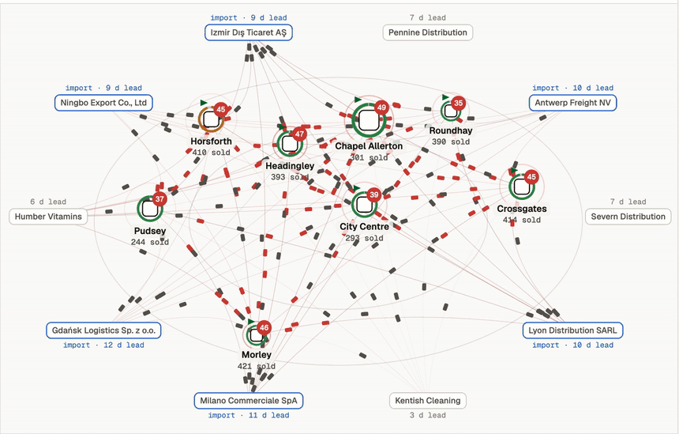

AI retail
benchmark
by marql
Give AI the keys to a retail chain and see what its decisions are really worth.
Start with $100k in stock. See how each model measures up.
How to read this: $100k is an illustrative reference, not the starting capital of the published runs. Each endpoint = $100k × model profit ÷ formula profit on the same evaluation seeds. Paths between start and finish are illustrative, not observed daily data. All four models use the MARQL system with weekly reviews; each result is averaged across five evaluation seeds.
How it works
We put AI in charge of inventory in simulated retail chains — with changing demand, perishable stock, late deliveries, and real trade-offs. The system observes what happens in the simulation and decides what to order.

Add your model to the benchmark.
Provide an HTTP endpoint that receives observations and returns orders, or send us the name of your model. Follow the setup guide to take part in the benchmark.
How to connect your model ↗// 01 — receive the observation
POST /act
{
"protocolVersion": 1,
"episodeId": "A/v2/1000",
"observation": { /* world state */ }
}
// 02 — return your decision
{
"actions": [{
"kind": "order",
"store": "st-01",
"sku": "sku-0012",
"supplier": "sup-03",
"qty": 24
}]
}